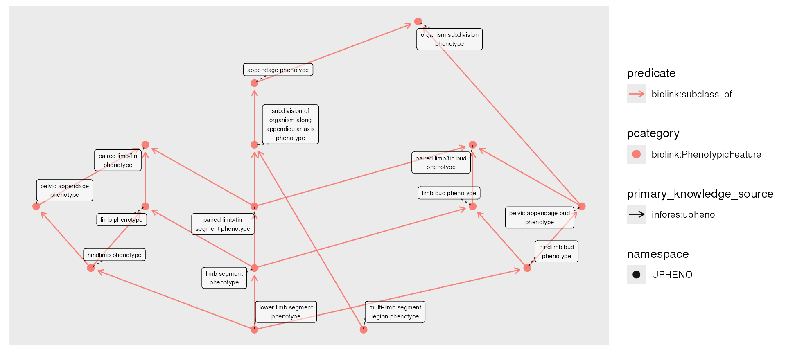
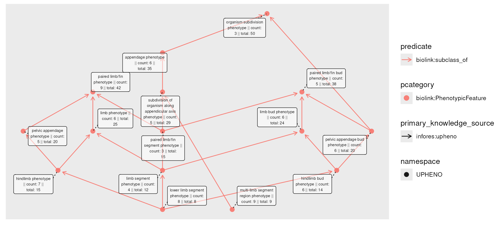
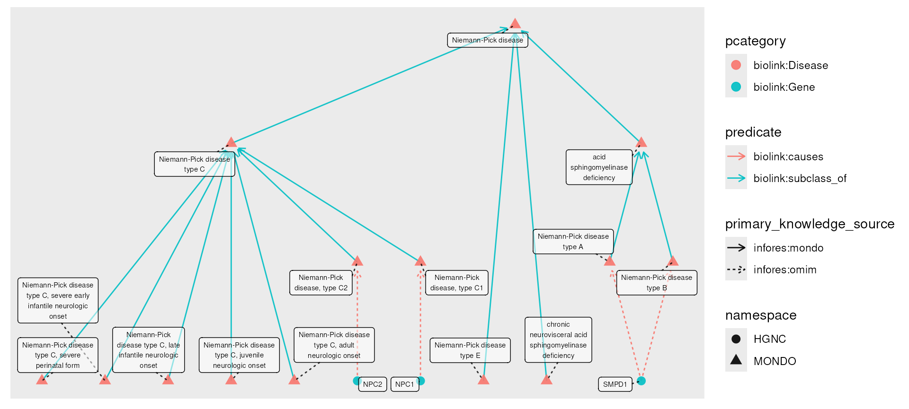
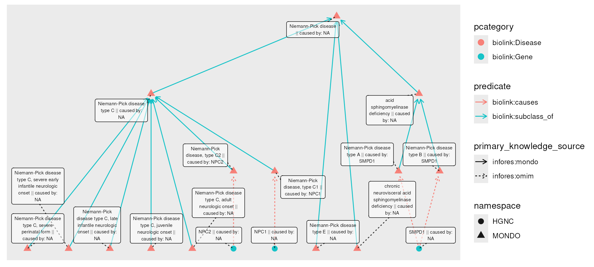
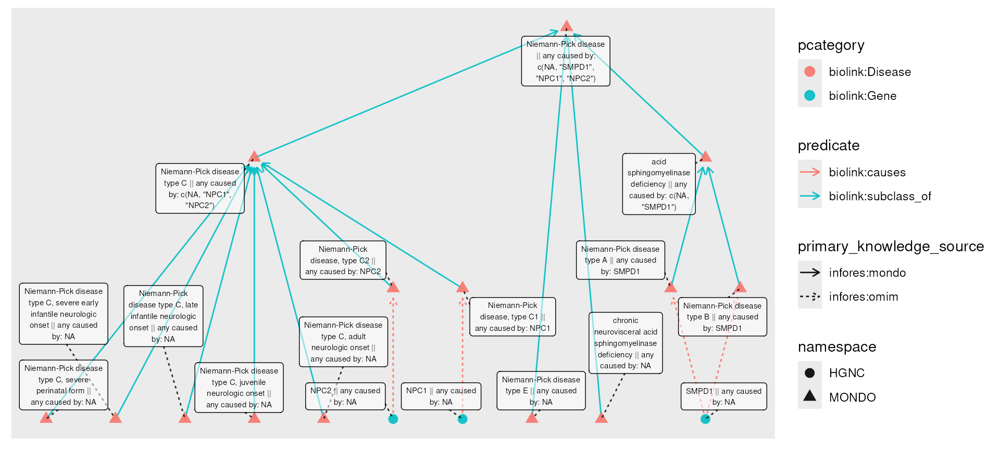
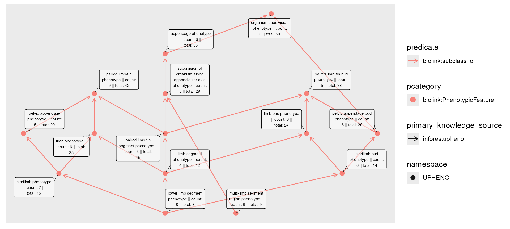
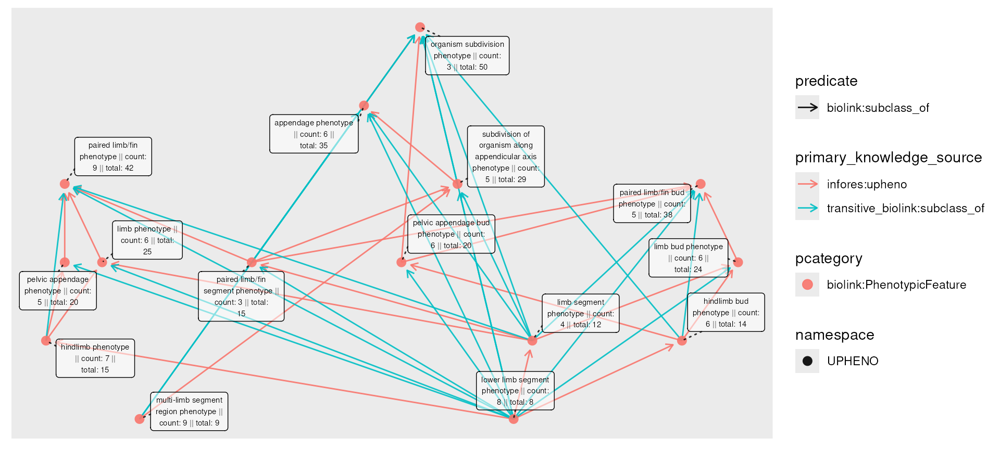
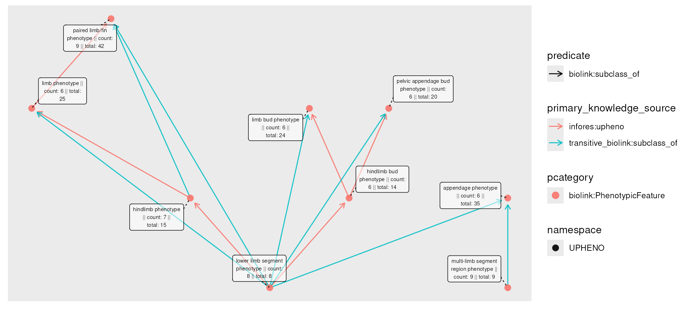
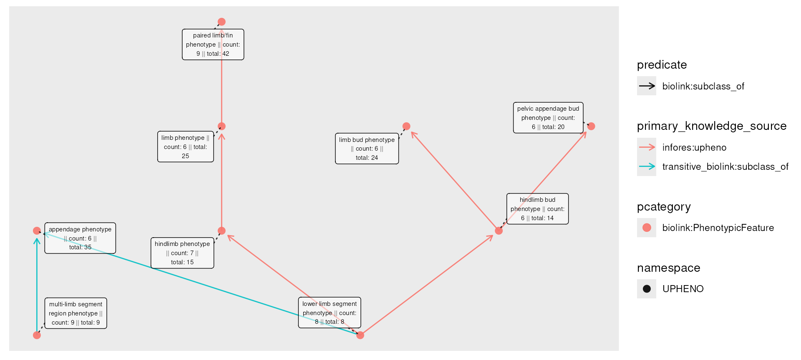

Rollups and Transitivity
Shawn T O’Neil
Vignette updated: Nov-14-2025
Source:vignettes/examples/transitive_rollups.Rmd
transitive_rollups.RmdFirst, let’s load some required libraries, and instantiate a
session-cached monarch_engine() for querying.
Knowledge graphs frequently incorporate ontologies, which include
complex hierarchies of classes and sub-classes. Let’s visualize a couple
of levels of this hierarchy for the phenotype
"leg phenotype" (removing "leg phenotype" as
it will make the next examples clearer).
phenos <- e |>
fetch_nodes(name == "leg phenotype") |>
expand_n(predicates = "biolink:subclass_of",
categories = "biolink:PhenotypicFeature",
direction = "out",
n = 4) |>
activate(nodes) |>
filter(name != "leg phenotype")
plot(phenos) It is not uncommon for data like this to come with additional information; if these were a set of disease diagnoses, we might have patient counts associated with each. Since patients receive diagnoses of varying specificity, there may be counts on any subtype.
Hypothesizing these phenotypes as diagnoses, we’ll simulate some count information, plotting it in the node labels:
set.seed(42)
num_nodes <- nrow(nodes(phenos))
phenos_counted <- phenos |>
activate(nodes) |>
mutate(count = rpois(num_nodes, lambda = 5))
plot(phenos_counted,
node_label = paste(name, " || count: ", count))
A “rollup” might thus ask, how many patients are associated with each phenotype, if we include all of it’s descendants? For example, “lower limb segment phenotype” (8 patients) is a subclass of “limb segment phenotype” (4 patients), so the total number of “limb segment phenotype” patients includes both (12 patients).
The roll_up() function allows us to compute this
information. It is designed to work with dplyr’s
mutate() on node data: we provide the column specifying
information to aggregate, a function to apply over the values (amongst
all descendants), and whether each node should include its own value in
the aggregation.
phenos_counted_rolled <- phenos_counted |>
activate(nodes) |>
mutate(total = roll_up(count, fun = sum, include_self = TRUE))
plot(phenos_counted_rolled,
node_label = paste0(name,
" || count: ", count,
" || total: ", total))
The corresponding roll_down()
aggregates in the opposite direction (not shown).
Other aggregations, transferring information
When performing a rollup, each node receives the specified column,
indexed to include only its descendants (and itself, if
include_self is set). This is then passed to the
aggregating function fun.
To see how this can be useful, we’ll start by introducing another
function, transfer(). Much like roll_up(),
this function is designed to be used with mutate() on node
data; its purpose is to transfer information across edges, usually from
nodes of one kind to another. We’ll start by fetching all of the
subtypes of Niemann-Pick disease, and all known causal genes.
npc_genes <- e |>
fetch_nodes(name == "Niemann-Pick disease") |>
descendants() |>
expand(predicates = "biolink:causes")
plot(npc_genes)
Now, we might wish for disease nodes to have an attribute reflecting
their causal genes. This information is captured in the graph, but not
as a part of the nodes. The transfer() function ‘pulls’
information across edges:
npc_genes_causal <- npc_genes |>
activate(nodes) |>
mutate(caused_by = transfer(name, over = "biolink:causes", direction = "out"))
plot(npc_genes_causal,
node_label = paste0(name, " || caused by: ", caused_by))
npc_genes_causalGraph with 17 nodes and 17 edges. Expand sections below for details.
Node Data
Showing 17 of 17 nodes:
| id | pcategory | name | symbol | in_taxon_label | description | synonym (list) | category (list) | iri | xref (list) | namespace | provided_by | narrow_synonyms | exact_synonyms | subsets | related_synonyms | broad_synonyms | full_name | in_taxon | type (list) | caused_by |
|---|---|---|---|---|---|---|---|---|---|---|---|---|---|---|---|---|---|---|---|---|
| “MONDO:0001982” | “biolink:Disease” | “Niemann-Pick disease” | NA | NA | “A group of inherited, severe metabolic disorders in which sphingomyelin accumulates in lysosomes in cells. The lysosomes normally transport material through and out of the cell.” | c(“Niemann-Pick disease with cholesterol esterification block”, “Niemann-Pick disease, subacute juvenile form”, “lipoid histiocytosis”, “lipoid histiocytosis (classical phosphatide)”, “sphingomyelin lipidosis”, “sphingomyelin/cholesterol lipidosis”, “sphingomyelinase deficiency disease”, “type A Niemann-Pick disease”) | “biolink:Disease” | “http://purl.obolibrary.org/obo/MONDO_0001982” | c(“DOID:14504”, “EFO:1001380”, “GARD:13334”, “ICD10CM:E75.24”, “MEDGEN:10348”, “MESH:D009542”, “NANDO:2200561”, “NCIT:C61269”, “SCTID:58459009”, “UMLS:C0028064”, “icd11.foundation:398872780”) | “MONDO” | “phenio_nodes” | “type A Niemann-Pick disease” | “Niemann-Pick disease with cholesterol esterification block|Niemann-Pick disease, subacute juvenile form|lipoid histiocytosis|lipoid histiocytosis (classical phosphatide)|sphingomyelin lipidosis|sphingomyelin/cholesterol lipidosis|sphingomyelinase deficiency disease” | “gard_rare|nord_rare|otar|rare” | NA | NA | NA | NA | NA | NA |
| “MONDO:0100464” | “biolink:Disease” | “acid sphingomyelinase deficiency” | NA | NA | “An autosomal recessive lysosomal disease caused by biallelic loss of function variants in the SMPD1 gene. Clinical symptoms in affected individuals occur along a continuum. At the severe end of the spectrum are individuals historically diagnosed with Niemann-Pick disease type A (the neurovisceral form), which is characterized by hepatosplenomegaly with rapid neurological deterioration leading to death in the first few years of life. At the milder end of the spectrum are individuals historically diagnosed with Niemann-Pick disease type B, a later-onset, chronic visceral form, characterized by progressive visceral organ symptoms including hepatosplenomegaly and pulmonary insufficiency, and survival into adulthood. In addition, some affected individuals present with an intermediate phenotype, Niemann-Pick disease type A/B.” | NA | “biolink:Disease” | “http://purl.obolibrary.org/obo/MONDO_0100464” | c(“MEDGEN:1800807”, “UMLS:C5243927”) | “MONDO” | “phenio_nodes” | NA | NA | “clingen|gard_rare|otar|rare” | NA | NA | NA | NA | NA | NA |
| “MONDO:0009756” | “biolink:Disease” | “Niemann-Pick disease type A” | NA | NA | “Niemann-Pick disease type A is a very severe subtype of Niemann-Pick disease, an autosomal recessive lysosomal disease, and is characterized clinically by onset in infancy or early childhood with failure to thrive, hepatosplenomegaly, and rapidly progressive neurodegenerative disorders.” | c(“Niemann-PICK disease, type A”, “Niemann-Pick disease, Intermediate, protracted neurovisceral”, “sphingomyelin lipidosis”, “sphingomyelinase deficiency”) | “biolink:Disease” | “http://purl.obolibrary.org/obo/MONDO_0009756” | c(“DOID:0070111”, “GARD:7206”, “ICD10CM:E75.240”, “MEDGEN:78650”, “MESH:D052536”, “NANDO:1200061”, “NANDO:2201206”, “NCIT:C126561”, “OMIM:257200”, “Orphanet:77292”, “SCTID:52165006”, “UMLS:C0268242”, “icd11.foundation:530611243”) | “MONDO” | “phenio_nodes” | NA | NA | “gard_rare|nord_rare|ordo_disorder|orphanet_rare|otar|rare” | “Niemann-PICK disease, type A|Niemann-Pick disease, Intermediate, protracted neurovisceral|sphingomyelin lipidosis|sphingomyelinase deficiency” | NA | NA | NA | NA | “SMPD1” |
| “MONDO:0009757” | “biolink:Disease” | “Niemann-Pick disease, type C1” | NA | NA | “Type C Niemann-Pick disease associated with a mutation in the gene NPC1, encoding Niemann-Pick C1 protein.” | c(“NPC1”, “Niemann-PICK disease, type C1”, “Niemann-Pick disease type C1”, “Niemann-Pick disease with cholesterol esterification block”, “Niemann-Pick disease without sphingomyelinase deficiency”, “Niemann-Pick disease, chronic neuronopathic form”, “Niemann-Pick disease, nova Scotian type”, “Niemann-Pick disease, subacute juvenile form”, “Niemann-Pick disease, type C”, “Niemann-Pick disease, type C1”, “Niemann-Pick disease, type D”, “neurovisceral storage disease with vertical supranuclear ophthalmoplegia”, “type C1 Niemann-Pick disease”) | “biolink:Disease” | “http://purl.obolibrary.org/obo/MONDO_0009757” | c(“DOID:0070113”, “MEDGEN:465922”, “NCIT:C126864”, “OMIM:257220”, “SCTID:18927009”, “SCTID:67855008”, “UMLS:C3179455”) | “MONDO” | “phenio_nodes” | NA | “Niemann-Pick disease, type C1|type C1 Niemann-Pick disease” | “clingen|gard_rare|rare” | “NPC1|Niemann-PICK disease, type C1|Niemann-Pick disease type C1|Niemann-Pick disease with cholesterol esterification block|Niemann-Pick disease without sphingomyelinase deficiency|Niemann-Pick disease, chronic neuronopathic form|Niemann-Pick disease, nova Scotian type|Niemann-Pick disease, subacute juvenile form|Niemann-Pick disease, type C|Niemann-Pick disease, type D|neurovisceral storage disease with vertical supranuclear ophthalmoplegia” | NA | NA | NA | NA | “NPC1” |
| “MONDO:0018982” | “biolink:Disease” | “Niemann-Pick disease type C” | NA | NA | “NPC is a complex lipid storage disease mainly characterized by the accumulation of unesterified cholesterol in the late endosomal/lysosomal compartment.” | c(“NPC”, “Niemann Pick Disease Type C”) | “biolink:Disease” | “http://purl.obolibrary.org/obo/MONDO_0018982” | c(“GARD:7207”, “ICD10CM:E75.242”, “MEDGEN:67399”, “MESH:D052556”, “NANDO:1200063”, “NORD:1509”, “Orphanet:646”, “SCTID:66751000”, “UMLS:C0220756”, “icd11.foundation:812702125”) | “MONDO” | “phenio_nodes” | NA | “Niemann Pick Disease Type C” | “gard_rare|nord_rare|ordo_disorder|orphanet_rare|otar|rare” | NA | “NPC” | NA | NA | NA | NA |
| “MONDO:0011871” | “biolink:Disease” | “Niemann-Pick disease type B” | NA | NA | “Niemann-Pick disease type B is a mild subtype of Niemann-Pick disease, an autosomal recessive lysosomal disease, and is characterized clinically by onset in childhood with hepatosplenomegaly, growth retardation, and lung disorders such as infections and dyspnea” | c(“Niemann Pick disease type B”, “Niemann-PICK disease, type B”, “Niemann-Pick disease, Intermediate, with visceral involvement and rapid progression”, “Niemann-Pick disease, type E”, “Niemann-Pick disease, type F”, “type B Niemann-Pick disease”) | “biolink:Disease” | “http://purl.obolibrary.org/obo/MONDO_0011871” | c(“DOID:0070112”, “GARD:10729”, “ICD10CM:E75.241”, “MEDGEN:78651”, “MESH:D052537”, “NANDO:1200062”, “NANDO:2201207”, “NCIT:C126866”, “OMIM:607616”, “Orphanet:77293”, “SCTID:39390005”, “UMLS:C0268243”, “icd11.foundation:327269975”) | “MONDO” | “phenio_nodes” | NA | “type B Niemann-Pick disease” | “gard_rare|nord_rare|ordo_disorder|orphanet_rare|otar|rare” | “Niemann Pick disease type B|Niemann-PICK disease, type B|Niemann-Pick disease, Intermediate, with visceral involvement and rapid progression|Niemann-Pick disease, type E|Niemann-Pick disease, type F” | NA | NA | NA | NA | “SMPD1” |
| “MONDO:0011873” | “biolink:Disease” | “Niemann-Pick disease, type C2” | NA | NA | “Niemann-Pick disease type C2 is a rare metabolic condition that affects many different parts of the body. Although signs and symptoms can develop at any age (infancy through adulthood), most affected people develop features of the condition during childhood. Neimann-Pick disease type C2 may be characterized by ataxia (difficulty coordinating movements), vertical supranuclear gaze palsy (inability to move the eyes vertically), poor muscle tone, hepatosplenomegaly (enlarged liver and spleen), interstitial lung disease, intellectual decline, seizures, speech problems, and difficulty swallowing. Niemann-Pick disease type C2 is caused by changes (mutations) in the NPC2 gene and is inherited in an autosomal recessive manner. There is, unfortunately, no cure for Niemann-Pick disease type C2. Treatment is based on the signs and symptoms present in each person.” | c(“NPC2”, “Niemann-PICK disease, type C2”, “Niemann-Pick disease type C2”, “Niemann-Pick disease, type C2”, “type C2 Niemann-Pick disease”) | “biolink:Disease” | “http://purl.obolibrary.org/obo/MONDO_0011873” | c(“DOID:0070114”, “GARD:3992”, “MEDGEN:335942”, “MESH:C536119”, “NCIT:C126865”, “OMIM:607625”, “UMLS:C1843366”) | “MONDO” | “phenio_nodes” | NA | “NPC2|Niemann-Pick disease, type C2|type C2 Niemann-Pick disease” | “clingen|gard_rare|rare” | “Niemann-PICK disease, type C2|Niemann-Pick disease type C2” | NA | NA | NA | NA | “NPC2” |
| “MONDO:0016306” | “biolink:Disease” | “Niemann-Pick disease type C, severe perinatal form” | NA | NA | NA | NA | “biolink:Disease” | “http://purl.obolibrary.org/obo/MONDO_0016306” | c(“GARD:20504”, “MEDGEN:1842349”, “Orphanet:216972”, “UMLS:C5680866”) | “MONDO” | “phenio_nodes” | NA | NA | “gard_rare|nord_rare|ordo_subtype_of_a_disorder|otar|rare” | NA | NA | NA | NA | NA | NA |
| “MONDO:0016307” | “biolink:Disease” | “Niemann-Pick disease type C, severe early infantile neurologic onset” | NA | NA | NA | NA | “biolink:Disease” | “http://purl.obolibrary.org/obo/MONDO_0016307” | c(“GARD:20505”, “MEDGEN:1842400”, “Orphanet:216975”, “UMLS:C5680868”, “icd11.foundation:587642791”) | “MONDO” | “phenio_nodes” | NA | NA | “gard_rare|nord_rare|ordo_subtype_of_a_disorder|otar|rare” | NA | NA | NA | NA | NA | NA |
| “MONDO:0016308” | “biolink:Disease” | “Niemann-Pick disease type C, late infantile neurologic onset” | NA | NA | NA | NA | “biolink:Disease” | “http://purl.obolibrary.org/obo/MONDO_0016308” | c(“GARD:20506”, “MEDGEN:1843353”, “Orphanet:216978”, “UMLS:C5680867”, “icd11.foundation:2075382821”) | “MONDO” | “phenio_nodes” | NA | NA | “gard_rare|nord_rare|ordo_subtype_of_a_disorder|otar|rare” | NA | NA | NA | NA | NA | NA |
| “MONDO:0016309” | “biolink:Disease” | “Niemann-Pick disease type C, juvenile neurologic onset” | NA | NA | NA | “Niemann-Pick disease type C, classic form” | “biolink:Disease” | “http://purl.obolibrary.org/obo/MONDO_0016309” | c(“GARD:20507”, “MEDGEN:1842257”, “Orphanet:216981”, “UMLS:C5679813”, “icd11.foundation:2006062681”) | “MONDO” | “phenio_nodes” | NA | “Niemann-Pick disease type C, classic form” | “gard_rare|nord_rare|ordo_subtype_of_a_disorder|otar|rare” | NA | NA | NA | NA | NA | NA |
| “MONDO:0016310” | “biolink:Disease” | “Niemann-Pick disease type C, adult neurologic onset” | NA | NA | NA | NA | “biolink:Disease” | “http://purl.obolibrary.org/obo/MONDO_0016310” | c(“GARD:20508”, “MEDGEN:1826101”, “NANDO:1200065”, “NANDO:2201209”, “Orphanet:216986”, “UMLS:C5680869”, “icd11.foundation:77127214”) | “MONDO” | “phenio_nodes” | NA | NA | “gard_rare|nord_rare|ordo_subtype_of_a_disorder|otar|rare” | NA | NA | NA | NA | NA | NA |
| “MONDO:0020384” | “biolink:Disease” | “Niemann-Pick disease type E” | NA | NA | “Niemann-Pick disease, type E is a poorly defined adult-onset and non-neuronopathic form of Niemann-Pick disease.” | NA | “biolink:Disease” | “http://purl.obolibrary.org/obo/MONDO_0020384” | c(“MEDGEN:82781”, “Orphanet:99022”, “SCTID:73399005”, “UMLS:C0268248”) | “MONDO” | “phenio_nodes” | NA | NA | “gard_rare|otar|rare” | NA | NA | NA | NA | NA | NA |
| “MONDO:0850058” | “biolink:Disease” | “chronic neurovisceral acid sphingomyelinase deficiency” | NA | NA | NA | NA | “biolink:Disease” | “http://purl.obolibrary.org/obo/MONDO_0850058” | c(“GARD:22456”, “ICD10CM:E75.244”, “MEDGEN:1842316”, “Orphanet:618891”, “UMLS:C5539139”) | “MONDO” | “phenio_nodes” | NA | NA | “gard_rare|nord_rare|ordo_disorder|orphanet_rare|rare” | NA | NA | NA | NA | NA | NA |
| “HGNC:14537” | “biolink:Gene” | “NPC2” | “NPC2” | “Homo sapiens” | NA | c(“HE1”, “NP-C2”, “EDDM1”, “epididymal protein 1”, “Niemann-Pick disease, type C2”) | “biolink:Gene” | NA | c(“ENSEMBL:ENSG00000119655”, “OMIM:601015”) | “HGNC” | “hgnc_gene_nodes” | NA | NA | NA | NA | NA | “NPC intracellular cholesterol transporter 2” | “NCBITaxon:9606” | “SO:0001217” | NA |
| “HGNC:11120” | “biolink:Gene” | “SMPD1” | “SMPD1” | “Homo sapiens” | NA | c(“ASM”, “acid sphingomyelinase”, “Niemann-Pick type A/B”, “sphingomyelin phosphodiesterase 1, acid lysosomal”) | “biolink:Gene” | NA | c(“ENSEMBL:ENSG00000166311”, “OMIM:607608”) | “HGNC” | “hgnc_gene_nodes” | NA | NA | NA | NA | NA | “sphingomyelin phosphodiesterase 1” | “NCBITaxon:9606” | “SO:0001217” | NA |
| “HGNC:7897” | “biolink:Gene” | “NPC1” | “NPC1” | “Homo sapiens” | NA | c(“SLC65A1”, “Niemann-Pick disease, type C1”) | “biolink:Gene” | NA | c(“ENSEMBL:ENSG00000141458”, “OMIM:607623”) | “HGNC” | “hgnc_gene_nodes” | NA | NA | NA | NA | NA | “NPC intracellular cholesterol transporter 1” | “NCBITaxon:9606” | “SO:0001217” | NA |
Edge Data
Showing 17 of 17 edges:
| from | to | subject | predicate | object | primary_knowledge_source | agent_type | knowledge_level | aggregator_knowledge_source | provided_by | id | category (list) | original_object | original_subject |
|---|---|---|---|---|---|---|---|---|---|---|---|---|---|
| 3 | 2 | “MONDO:0009756” | “biolink:subclass_of” | “MONDO:0100464” | “infores:mondo” | “not_provided” | “not_provided” | “infores:monarchinitiative|infores:phenio” | “phenio_edges” | “urn:uuid:36460df7-c6bf-4dca-af59-2fcb3ba87d6d” | “biolink:Association” | NA | NA |
| 4 | 5 | “MONDO:0009757” | “biolink:subclass_of” | “MONDO:0018982” | “infores:mondo” | “not_provided” | “not_provided” | “infores:monarchinitiative|infores:phenio” | “phenio_edges” | “urn:uuid:6773dba8-67ae-4350-a717-a414779df679” | “biolink:Association” | NA | NA |
| 6 | 2 | “MONDO:0011871” | “biolink:subclass_of” | “MONDO:0100464” | “infores:mondo” | “not_provided” | “not_provided” | “infores:monarchinitiative|infores:phenio” | “phenio_edges” | “urn:uuid:2774cdd1-e13b-4fad-b7dd-c42cad0dc019” | “biolink:Association” | NA | NA |
| 7 | 5 | “MONDO:0011873” | “biolink:subclass_of” | “MONDO:0018982” | “infores:mondo” | “not_provided” | “not_provided” | “infores:monarchinitiative|infores:phenio” | “phenio_edges” | “urn:uuid:ce103bff-83b2-435d-a6ad-47a68f41467b” | “biolink:Association” | NA | NA |
| 8 | 5 | “MONDO:0016306” | “biolink:subclass_of” | “MONDO:0018982” | “infores:mondo” | “not_provided” | “not_provided” | “infores:monarchinitiative|infores:phenio” | “phenio_edges” | “urn:uuid:bb45c5f1-ba78-44c9-a9fe-98c1ef2a5bd7” | “biolink:Association” | NA | NA |
| 9 | 5 | “MONDO:0016307” | “biolink:subclass_of” | “MONDO:0018982” | “infores:mondo” | “not_provided” | “not_provided” | “infores:monarchinitiative|infores:phenio” | “phenio_edges” | “urn:uuid:334aa59a-7d23-4764-ad20-b7ba5d79f950” | “biolink:Association” | NA | NA |
| 10 | 5 | “MONDO:0016308” | “biolink:subclass_of” | “MONDO:0018982” | “infores:mondo” | “not_provided” | “not_provided” | “infores:monarchinitiative|infores:phenio” | “phenio_edges” | “urn:uuid:33eedac8-66f3-4f1c-aba9-f25ed369e155” | “biolink:Association” | NA | NA |
| 11 | 5 | “MONDO:0016309” | “biolink:subclass_of” | “MONDO:0018982” | “infores:mondo” | “not_provided” | “not_provided” | “infores:monarchinitiative|infores:phenio” | “phenio_edges” | “urn:uuid:e781cf11-b0b0-4ff9-9d56-7b7f81f535f2” | “biolink:Association” | NA | NA |
| 12 | 5 | “MONDO:0016310” | “biolink:subclass_of” | “MONDO:0018982” | “infores:mondo” | “not_provided” | “not_provided” | “infores:monarchinitiative|infores:phenio” | “phenio_edges” | “urn:uuid:54af4ae9-21e4-48d7-9420-5c540719c2f9” | “biolink:Association” | NA | NA |
| 5 | 1 | “MONDO:0018982” | “biolink:subclass_of” | “MONDO:0001982” | “infores:mondo” | “not_provided” | “not_provided” | “infores:monarchinitiative|infores:phenio” | “phenio_edges” | “urn:uuid:c0c2903c-d702-44ac-9456-6f1383e5a25a” | “biolink:Association” | NA | NA |
| 13 | 1 | “MONDO:0020384” | “biolink:subclass_of” | “MONDO:0001982” | “infores:mondo” | “not_provided” | “not_provided” | “infores:monarchinitiative|infores:phenio” | “phenio_edges” | “urn:uuid:87b140c9-d6c9-4401-a93f-0f7b9bc0e4c5” | “biolink:Association” | NA | NA |
| 2 | 1 | “MONDO:0100464” | “biolink:subclass_of” | “MONDO:0001982” | “infores:mondo” | “not_provided” | “not_provided” | “infores:monarchinitiative|infores:phenio” | “phenio_edges” | “urn:uuid:374ab4c1-1277-4f3b-996a-5db04577e237” | “biolink:Association” | NA | NA |
| 14 | 1 | “MONDO:0850058” | “biolink:subclass_of” | “MONDO:0001982” | “infores:mondo” | “not_provided” | “not_provided” | “infores:monarchinitiative|infores:phenio” | “phenio_edges” | “urn:uuid:d849b58c-a298-4bfc-842d-0f9b2a88208b” | “biolink:Association” | NA | NA |
| 15 | 7 | “HGNC:14537” | “biolink:causes” | “MONDO:0011873” | “infores:omim” | “manual_agent” | “knowledge_assertion” | “infores:monarchinitiative|infores:medgen” | “hpoa_gene_to_disease_edges” | “uuid:0eae150e-198e-11f0-be82-6045bdb3d4c0” | “biolink:CausalGeneToDiseaseAssociation” | “OMIM:607625” | “NCBIGene:10577” |
| 16 | 6 | “HGNC:11120” | “biolink:causes” | “MONDO:0011871” | “infores:omim” | “manual_agent” | “knowledge_assertion” | “infores:monarchinitiative|infores:medgen” | “hpoa_gene_to_disease_edges” | “uuid:0eae1529-198e-11f0-be82-6045bdb3d4c0” | “biolink:CausalGeneToDiseaseAssociation” | “OMIM:607616” | “NCBIGene:6609” |
| 17 | 4 | “HGNC:7897” | “biolink:causes” | “MONDO:0009757” | “infores:omim” | “manual_agent” | “knowledge_assertion” | “infores:monarchinitiative|infores:medgen” | “hpoa_gene_to_disease_edges” | “uuid:0ec43c21-198e-11f0-be82-6045bdb3d4c0” | “biolink:CausalGeneToDiseaseAssociation” | “OMIM:257220” | “NCBIGene:4864” |
| 16 | 3 | “HGNC:11120” | “biolink:causes” | “MONDO:0009756” | “infores:omim” | “manual_agent” | “knowledge_assertion” | “infores:monarchinitiative|infores:medgen” | “hpoa_gene_to_disease_edges” | “uuid:0ec43cb3-198e-11f0-be82-6045bdb3d4c0” | “biolink:CausalGeneToDiseaseAssociation” | “OMIM:257200” | “NCBIGene:6609” |
Here, transfer is moving information ‘over’ (or across)
"biolink:causes" edges in an outward direction, along the
direction of the edge. The transferred information is being drawn from
source nodes’ name, resulting in a new
caused_by column in the node table.
## # A tibble: 17 × 2
## name caused_by
## <chr> <chr>
## 1 Niemann-Pick disease NA
## 2 acid sphingomyelinase deficiency NA
## 3 Niemann-Pick disease type A SMPD1
## 4 Niemann-Pick disease, type C1 NPC1
## 5 Niemann-Pick disease type C NA
## 6 Niemann-Pick disease type B SMPD1
## 7 Niemann-Pick disease, type C2 NPC2
## 8 Niemann-Pick disease type C, severe perinatal form NA
## 9 Niemann-Pick disease type C, severe early infantile neurologic onset NA
## 10 Niemann-Pick disease type C, late infantile neurologic onset NA
## 11 Niemann-Pick disease type C, juvenile neurologic onset NA
## 12 Niemann-Pick disease type C, adult neurologic onset NA
## 13 Niemann-Pick disease type E NA
## 14 chronic neurovisceral acid sphingomyelinase deficiency NA
## 15 NPC2 NA
## 16 SMPD1 NA
## 17 NPC1 NAIn cases where a transfer would result in multiple values being collected at the destination node, the result will be a list column.
To finish this example, we use roll_up() to collect, for
each diseases, the set of genes that cause it or any of its
subtypes.
npc_genes_causal_rolled <- npc_genes_causal |>
activate(nodes) |>
mutate(any_caused_by = roll_up(caused_by,
fun = unique,
include_self = TRUE,
predicates = "biolink:subclass_of"))
plot(npc_genes_causal_rolled,
node_label = paste0(name, " || any caused by: ", any_caused_by))
npc_genes_causal_rolledGraph with 17 nodes and 17 edges. Expand sections below for details.
Node Data
Showing 17 of 17 nodes:
| id | pcategory | name | symbol | in_taxon_label | description | synonym (list) | category (list) | iri | xref (list) | namespace | provided_by | narrow_synonyms | exact_synonyms | subsets | related_synonyms | broad_synonyms | full_name | in_taxon | type (list) | caused_by | any_caused_by (list) |
|---|---|---|---|---|---|---|---|---|---|---|---|---|---|---|---|---|---|---|---|---|---|
| “MONDO:0001982” | “biolink:Disease” | “Niemann-Pick disease” | NA | NA | “A group of inherited, severe metabolic disorders in which sphingomyelin accumulates in lysosomes in cells. The lysosomes normally transport material through and out of the cell.” | c(“Niemann-Pick disease with cholesterol esterification block”, “Niemann-Pick disease, subacute juvenile form”, “lipoid histiocytosis”, “lipoid histiocytosis (classical phosphatide)”, “sphingomyelin lipidosis”, “sphingomyelin/cholesterol lipidosis”, “sphingomyelinase deficiency disease”, “type A Niemann-Pick disease”) | “biolink:Disease” | “http://purl.obolibrary.org/obo/MONDO_0001982” | c(“DOID:14504”, “EFO:1001380”, “GARD:13334”, “ICD10CM:E75.24”, “MEDGEN:10348”, “MESH:D009542”, “NANDO:2200561”, “NCIT:C61269”, “SCTID:58459009”, “UMLS:C0028064”, “icd11.foundation:398872780”) | “MONDO” | “phenio_nodes” | “type A Niemann-Pick disease” | “Niemann-Pick disease with cholesterol esterification block|Niemann-Pick disease, subacute juvenile form|lipoid histiocytosis|lipoid histiocytosis (classical phosphatide)|sphingomyelin lipidosis|sphingomyelin/cholesterol lipidosis|sphingomyelinase deficiency disease” | “gard_rare|nord_rare|otar|rare” | NA | NA | NA | NA | NA | NA | c(NA, “SMPD1”, “NPC1”, “NPC2”) |
| “MONDO:0100464” | “biolink:Disease” | “acid sphingomyelinase deficiency” | NA | NA | “An autosomal recessive lysosomal disease caused by biallelic loss of function variants in the SMPD1 gene. Clinical symptoms in affected individuals occur along a continuum. At the severe end of the spectrum are individuals historically diagnosed with Niemann-Pick disease type A (the neurovisceral form), which is characterized by hepatosplenomegaly with rapid neurological deterioration leading to death in the first few years of life. At the milder end of the spectrum are individuals historically diagnosed with Niemann-Pick disease type B, a later-onset, chronic visceral form, characterized by progressive visceral organ symptoms including hepatosplenomegaly and pulmonary insufficiency, and survival into adulthood. In addition, some affected individuals present with an intermediate phenotype, Niemann-Pick disease type A/B.” | NA | “biolink:Disease” | “http://purl.obolibrary.org/obo/MONDO_0100464” | c(“MEDGEN:1800807”, “UMLS:C5243927”) | “MONDO” | “phenio_nodes” | NA | NA | “clingen|gard_rare|otar|rare” | NA | NA | NA | NA | NA | NA | c(NA, “SMPD1”) |
| “MONDO:0009756” | “biolink:Disease” | “Niemann-Pick disease type A” | NA | NA | “Niemann-Pick disease type A is a very severe subtype of Niemann-Pick disease, an autosomal recessive lysosomal disease, and is characterized clinically by onset in infancy or early childhood with failure to thrive, hepatosplenomegaly, and rapidly progressive neurodegenerative disorders.” | c(“Niemann-PICK disease, type A”, “Niemann-Pick disease, Intermediate, protracted neurovisceral”, “sphingomyelin lipidosis”, “sphingomyelinase deficiency”) | “biolink:Disease” | “http://purl.obolibrary.org/obo/MONDO_0009756” | c(“DOID:0070111”, “GARD:7206”, “ICD10CM:E75.240”, “MEDGEN:78650”, “MESH:D052536”, “NANDO:1200061”, “NANDO:2201206”, “NCIT:C126561”, “OMIM:257200”, “Orphanet:77292”, “SCTID:52165006”, “UMLS:C0268242”, “icd11.foundation:530611243”) | “MONDO” | “phenio_nodes” | NA | NA | “gard_rare|nord_rare|ordo_disorder|orphanet_rare|otar|rare” | “Niemann-PICK disease, type A|Niemann-Pick disease, Intermediate, protracted neurovisceral|sphingomyelin lipidosis|sphingomyelinase deficiency” | NA | NA | NA | NA | “SMPD1” | “SMPD1” |
| “MONDO:0009757” | “biolink:Disease” | “Niemann-Pick disease, type C1” | NA | NA | “Type C Niemann-Pick disease associated with a mutation in the gene NPC1, encoding Niemann-Pick C1 protein.” | c(“NPC1”, “Niemann-PICK disease, type C1”, “Niemann-Pick disease type C1”, “Niemann-Pick disease with cholesterol esterification block”, “Niemann-Pick disease without sphingomyelinase deficiency”, “Niemann-Pick disease, chronic neuronopathic form”, “Niemann-Pick disease, nova Scotian type”, “Niemann-Pick disease, subacute juvenile form”, “Niemann-Pick disease, type C”, “Niemann-Pick disease, type C1”, “Niemann-Pick disease, type D”, “neurovisceral storage disease with vertical supranuclear ophthalmoplegia”, “type C1 Niemann-Pick disease”) | “biolink:Disease” | “http://purl.obolibrary.org/obo/MONDO_0009757” | c(“DOID:0070113”, “MEDGEN:465922”, “NCIT:C126864”, “OMIM:257220”, “SCTID:18927009”, “SCTID:67855008”, “UMLS:C3179455”) | “MONDO” | “phenio_nodes” | NA | “Niemann-Pick disease, type C1|type C1 Niemann-Pick disease” | “clingen|gard_rare|rare” | “NPC1|Niemann-PICK disease, type C1|Niemann-Pick disease type C1|Niemann-Pick disease with cholesterol esterification block|Niemann-Pick disease without sphingomyelinase deficiency|Niemann-Pick disease, chronic neuronopathic form|Niemann-Pick disease, nova Scotian type|Niemann-Pick disease, subacute juvenile form|Niemann-Pick disease, type C|Niemann-Pick disease, type D|neurovisceral storage disease with vertical supranuclear ophthalmoplegia” | NA | NA | NA | NA | “NPC1” | “NPC1” |
| “MONDO:0018982” | “biolink:Disease” | “Niemann-Pick disease type C” | NA | NA | “NPC is a complex lipid storage disease mainly characterized by the accumulation of unesterified cholesterol in the late endosomal/lysosomal compartment.” | c(“NPC”, “Niemann Pick Disease Type C”) | “biolink:Disease” | “http://purl.obolibrary.org/obo/MONDO_0018982” | c(“GARD:7207”, “ICD10CM:E75.242”, “MEDGEN:67399”, “MESH:D052556”, “NANDO:1200063”, “NORD:1509”, “Orphanet:646”, “SCTID:66751000”, “UMLS:C0220756”, “icd11.foundation:812702125”) | “MONDO” | “phenio_nodes” | NA | “Niemann Pick Disease Type C” | “gard_rare|nord_rare|ordo_disorder|orphanet_rare|otar|rare” | NA | “NPC” | NA | NA | NA | NA | c(NA, “NPC1”, “NPC2”) |
| “MONDO:0011871” | “biolink:Disease” | “Niemann-Pick disease type B” | NA | NA | “Niemann-Pick disease type B is a mild subtype of Niemann-Pick disease, an autosomal recessive lysosomal disease, and is characterized clinically by onset in childhood with hepatosplenomegaly, growth retardation, and lung disorders such as infections and dyspnea” | c(“Niemann Pick disease type B”, “Niemann-PICK disease, type B”, “Niemann-Pick disease, Intermediate, with visceral involvement and rapid progression”, “Niemann-Pick disease, type E”, “Niemann-Pick disease, type F”, “type B Niemann-Pick disease”) | “biolink:Disease” | “http://purl.obolibrary.org/obo/MONDO_0011871” | c(“DOID:0070112”, “GARD:10729”, “ICD10CM:E75.241”, “MEDGEN:78651”, “MESH:D052537”, “NANDO:1200062”, “NANDO:2201207”, “NCIT:C126866”, “OMIM:607616”, “Orphanet:77293”, “SCTID:39390005”, “UMLS:C0268243”, “icd11.foundation:327269975”) | “MONDO” | “phenio_nodes” | NA | “type B Niemann-Pick disease” | “gard_rare|nord_rare|ordo_disorder|orphanet_rare|otar|rare” | “Niemann Pick disease type B|Niemann-PICK disease, type B|Niemann-Pick disease, Intermediate, with visceral involvement and rapid progression|Niemann-Pick disease, type E|Niemann-Pick disease, type F” | NA | NA | NA | NA | “SMPD1” | “SMPD1” |
| “MONDO:0011873” | “biolink:Disease” | “Niemann-Pick disease, type C2” | NA | NA | “Niemann-Pick disease type C2 is a rare metabolic condition that affects many different parts of the body. Although signs and symptoms can develop at any age (infancy through adulthood), most affected people develop features of the condition during childhood. Neimann-Pick disease type C2 may be characterized by ataxia (difficulty coordinating movements), vertical supranuclear gaze palsy (inability to move the eyes vertically), poor muscle tone, hepatosplenomegaly (enlarged liver and spleen), interstitial lung disease, intellectual decline, seizures, speech problems, and difficulty swallowing. Niemann-Pick disease type C2 is caused by changes (mutations) in the NPC2 gene and is inherited in an autosomal recessive manner. There is, unfortunately, no cure for Niemann-Pick disease type C2. Treatment is based on the signs and symptoms present in each person.” | c(“NPC2”, “Niemann-PICK disease, type C2”, “Niemann-Pick disease type C2”, “Niemann-Pick disease, type C2”, “type C2 Niemann-Pick disease”) | “biolink:Disease” | “http://purl.obolibrary.org/obo/MONDO_0011873” | c(“DOID:0070114”, “GARD:3992”, “MEDGEN:335942”, “MESH:C536119”, “NCIT:C126865”, “OMIM:607625”, “UMLS:C1843366”) | “MONDO” | “phenio_nodes” | NA | “NPC2|Niemann-Pick disease, type C2|type C2 Niemann-Pick disease” | “clingen|gard_rare|rare” | “Niemann-PICK disease, type C2|Niemann-Pick disease type C2” | NA | NA | NA | NA | “NPC2” | “NPC2” |
| “MONDO:0016306” | “biolink:Disease” | “Niemann-Pick disease type C, severe perinatal form” | NA | NA | NA | NA | “biolink:Disease” | “http://purl.obolibrary.org/obo/MONDO_0016306” | c(“GARD:20504”, “MEDGEN:1842349”, “Orphanet:216972”, “UMLS:C5680866”) | “MONDO” | “phenio_nodes” | NA | NA | “gard_rare|nord_rare|ordo_subtype_of_a_disorder|otar|rare” | NA | NA | NA | NA | NA | NA | NA |
| “MONDO:0016307” | “biolink:Disease” | “Niemann-Pick disease type C, severe early infantile neurologic onset” | NA | NA | NA | NA | “biolink:Disease” | “http://purl.obolibrary.org/obo/MONDO_0016307” | c(“GARD:20505”, “MEDGEN:1842400”, “Orphanet:216975”, “UMLS:C5680868”, “icd11.foundation:587642791”) | “MONDO” | “phenio_nodes” | NA | NA | “gard_rare|nord_rare|ordo_subtype_of_a_disorder|otar|rare” | NA | NA | NA | NA | NA | NA | NA |
| “MONDO:0016308” | “biolink:Disease” | “Niemann-Pick disease type C, late infantile neurologic onset” | NA | NA | NA | NA | “biolink:Disease” | “http://purl.obolibrary.org/obo/MONDO_0016308” | c(“GARD:20506”, “MEDGEN:1843353”, “Orphanet:216978”, “UMLS:C5680867”, “icd11.foundation:2075382821”) | “MONDO” | “phenio_nodes” | NA | NA | “gard_rare|nord_rare|ordo_subtype_of_a_disorder|otar|rare” | NA | NA | NA | NA | NA | NA | NA |
| “MONDO:0016309” | “biolink:Disease” | “Niemann-Pick disease type C, juvenile neurologic onset” | NA | NA | NA | “Niemann-Pick disease type C, classic form” | “biolink:Disease” | “http://purl.obolibrary.org/obo/MONDO_0016309” | c(“GARD:20507”, “MEDGEN:1842257”, “Orphanet:216981”, “UMLS:C5679813”, “icd11.foundation:2006062681”) | “MONDO” | “phenio_nodes” | NA | “Niemann-Pick disease type C, classic form” | “gard_rare|nord_rare|ordo_subtype_of_a_disorder|otar|rare” | NA | NA | NA | NA | NA | NA | NA |
| “MONDO:0016310” | “biolink:Disease” | “Niemann-Pick disease type C, adult neurologic onset” | NA | NA | NA | NA | “biolink:Disease” | “http://purl.obolibrary.org/obo/MONDO_0016310” | c(“GARD:20508”, “MEDGEN:1826101”, “NANDO:1200065”, “NANDO:2201209”, “Orphanet:216986”, “UMLS:C5680869”, “icd11.foundation:77127214”) | “MONDO” | “phenio_nodes” | NA | NA | “gard_rare|nord_rare|ordo_subtype_of_a_disorder|otar|rare” | NA | NA | NA | NA | NA | NA | NA |
| “MONDO:0020384” | “biolink:Disease” | “Niemann-Pick disease type E” | NA | NA | “Niemann-Pick disease, type E is a poorly defined adult-onset and non-neuronopathic form of Niemann-Pick disease.” | NA | “biolink:Disease” | “http://purl.obolibrary.org/obo/MONDO_0020384” | c(“MEDGEN:82781”, “Orphanet:99022”, “SCTID:73399005”, “UMLS:C0268248”) | “MONDO” | “phenio_nodes” | NA | NA | “gard_rare|otar|rare” | NA | NA | NA | NA | NA | NA | NA |
| “MONDO:0850058” | “biolink:Disease” | “chronic neurovisceral acid sphingomyelinase deficiency” | NA | NA | NA | NA | “biolink:Disease” | “http://purl.obolibrary.org/obo/MONDO_0850058” | c(“GARD:22456”, “ICD10CM:E75.244”, “MEDGEN:1842316”, “Orphanet:618891”, “UMLS:C5539139”) | “MONDO” | “phenio_nodes” | NA | NA | “gard_rare|nord_rare|ordo_disorder|orphanet_rare|rare” | NA | NA | NA | NA | NA | NA | NA |
| “HGNC:14537” | “biolink:Gene” | “NPC2” | “NPC2” | “Homo sapiens” | NA | c(“HE1”, “NP-C2”, “EDDM1”, “epididymal protein 1”, “Niemann-Pick disease, type C2”) | “biolink:Gene” | NA | c(“ENSEMBL:ENSG00000119655”, “OMIM:601015”) | “HGNC” | “hgnc_gene_nodes” | NA | NA | NA | NA | NA | “NPC intracellular cholesterol transporter 2” | “NCBITaxon:9606” | “SO:0001217” | NA | NA |
| “HGNC:11120” | “biolink:Gene” | “SMPD1” | “SMPD1” | “Homo sapiens” | NA | c(“ASM”, “acid sphingomyelinase”, “Niemann-Pick type A/B”, “sphingomyelin phosphodiesterase 1, acid lysosomal”) | “biolink:Gene” | NA | c(“ENSEMBL:ENSG00000166311”, “OMIM:607608”) | “HGNC” | “hgnc_gene_nodes” | NA | NA | NA | NA | NA | “sphingomyelin phosphodiesterase 1” | “NCBITaxon:9606” | “SO:0001217” | NA | NA |
| “HGNC:7897” | “biolink:Gene” | “NPC1” | “NPC1” | “Homo sapiens” | NA | c(“SLC65A1”, “Niemann-Pick disease, type C1”) | “biolink:Gene” | NA | c(“ENSEMBL:ENSG00000141458”, “OMIM:607623”) | “HGNC” | “hgnc_gene_nodes” | NA | NA | NA | NA | NA | “NPC intracellular cholesterol transporter 1” | “NCBITaxon:9606” | “SO:0001217” | NA | NA |
Edge Data
Showing 17 of 17 edges:
| from | to | subject | predicate | object | primary_knowledge_source | agent_type | knowledge_level | aggregator_knowledge_source | provided_by | id | category (list) | original_object | original_subject |
|---|---|---|---|---|---|---|---|---|---|---|---|---|---|
| 3 | 2 | “MONDO:0009756” | “biolink:subclass_of” | “MONDO:0100464” | “infores:mondo” | “not_provided” | “not_provided” | “infores:monarchinitiative|infores:phenio” | “phenio_edges” | “urn:uuid:36460df7-c6bf-4dca-af59-2fcb3ba87d6d” | “biolink:Association” | NA | NA |
| 4 | 5 | “MONDO:0009757” | “biolink:subclass_of” | “MONDO:0018982” | “infores:mondo” | “not_provided” | “not_provided” | “infores:monarchinitiative|infores:phenio” | “phenio_edges” | “urn:uuid:6773dba8-67ae-4350-a717-a414779df679” | “biolink:Association” | NA | NA |
| 6 | 2 | “MONDO:0011871” | “biolink:subclass_of” | “MONDO:0100464” | “infores:mondo” | “not_provided” | “not_provided” | “infores:monarchinitiative|infores:phenio” | “phenio_edges” | “urn:uuid:2774cdd1-e13b-4fad-b7dd-c42cad0dc019” | “biolink:Association” | NA | NA |
| 7 | 5 | “MONDO:0011873” | “biolink:subclass_of” | “MONDO:0018982” | “infores:mondo” | “not_provided” | “not_provided” | “infores:monarchinitiative|infores:phenio” | “phenio_edges” | “urn:uuid:ce103bff-83b2-435d-a6ad-47a68f41467b” | “biolink:Association” | NA | NA |
| 8 | 5 | “MONDO:0016306” | “biolink:subclass_of” | “MONDO:0018982” | “infores:mondo” | “not_provided” | “not_provided” | “infores:monarchinitiative|infores:phenio” | “phenio_edges” | “urn:uuid:bb45c5f1-ba78-44c9-a9fe-98c1ef2a5bd7” | “biolink:Association” | NA | NA |
| 9 | 5 | “MONDO:0016307” | “biolink:subclass_of” | “MONDO:0018982” | “infores:mondo” | “not_provided” | “not_provided” | “infores:monarchinitiative|infores:phenio” | “phenio_edges” | “urn:uuid:334aa59a-7d23-4764-ad20-b7ba5d79f950” | “biolink:Association” | NA | NA |
| 10 | 5 | “MONDO:0016308” | “biolink:subclass_of” | “MONDO:0018982” | “infores:mondo” | “not_provided” | “not_provided” | “infores:monarchinitiative|infores:phenio” | “phenio_edges” | “urn:uuid:33eedac8-66f3-4f1c-aba9-f25ed369e155” | “biolink:Association” | NA | NA |
| 11 | 5 | “MONDO:0016309” | “biolink:subclass_of” | “MONDO:0018982” | “infores:mondo” | “not_provided” | “not_provided” | “infores:monarchinitiative|infores:phenio” | “phenio_edges” | “urn:uuid:e781cf11-b0b0-4ff9-9d56-7b7f81f535f2” | “biolink:Association” | NA | NA |
| 12 | 5 | “MONDO:0016310” | “biolink:subclass_of” | “MONDO:0018982” | “infores:mondo” | “not_provided” | “not_provided” | “infores:monarchinitiative|infores:phenio” | “phenio_edges” | “urn:uuid:54af4ae9-21e4-48d7-9420-5c540719c2f9” | “biolink:Association” | NA | NA |
| 5 | 1 | “MONDO:0018982” | “biolink:subclass_of” | “MONDO:0001982” | “infores:mondo” | “not_provided” | “not_provided” | “infores:monarchinitiative|infores:phenio” | “phenio_edges” | “urn:uuid:c0c2903c-d702-44ac-9456-6f1383e5a25a” | “biolink:Association” | NA | NA |
| 13 | 1 | “MONDO:0020384” | “biolink:subclass_of” | “MONDO:0001982” | “infores:mondo” | “not_provided” | “not_provided” | “infores:monarchinitiative|infores:phenio” | “phenio_edges” | “urn:uuid:87b140c9-d6c9-4401-a93f-0f7b9bc0e4c5” | “biolink:Association” | NA | NA |
| 2 | 1 | “MONDO:0100464” | “biolink:subclass_of” | “MONDO:0001982” | “infores:mondo” | “not_provided” | “not_provided” | “infores:monarchinitiative|infores:phenio” | “phenio_edges” | “urn:uuid:374ab4c1-1277-4f3b-996a-5db04577e237” | “biolink:Association” | NA | NA |
| 14 | 1 | “MONDO:0850058” | “biolink:subclass_of” | “MONDO:0001982” | “infores:mondo” | “not_provided” | “not_provided” | “infores:monarchinitiative|infores:phenio” | “phenio_edges” | “urn:uuid:d849b58c-a298-4bfc-842d-0f9b2a88208b” | “biolink:Association” | NA | NA |
| 15 | 7 | “HGNC:14537” | “biolink:causes” | “MONDO:0011873” | “infores:omim” | “manual_agent” | “knowledge_assertion” | “infores:monarchinitiative|infores:medgen” | “hpoa_gene_to_disease_edges” | “uuid:0eae150e-198e-11f0-be82-6045bdb3d4c0” | “biolink:CausalGeneToDiseaseAssociation” | “OMIM:607625” | “NCBIGene:10577” |
| 16 | 6 | “HGNC:11120” | “biolink:causes” | “MONDO:0011871” | “infores:omim” | “manual_agent” | “knowledge_assertion” | “infores:monarchinitiative|infores:medgen” | “hpoa_gene_to_disease_edges” | “uuid:0eae1529-198e-11f0-be82-6045bdb3d4c0” | “biolink:CausalGeneToDiseaseAssociation” | “OMIM:607616” | “NCBIGene:6609” |
| 17 | 4 | “HGNC:7897” | “biolink:causes” | “MONDO:0009757” | “infores:omim” | “manual_agent” | “knowledge_assertion” | “infores:monarchinitiative|infores:medgen” | “hpoa_gene_to_disease_edges” | “uuid:0ec43c21-198e-11f0-be82-6045bdb3d4c0” | “biolink:CausalGeneToDiseaseAssociation” | “OMIM:257220” | “NCBIGene:4864” |
| 16 | 3 | “HGNC:11120” | “biolink:causes” | “MONDO:0009756” | “infores:omim” | “manual_agent” | “knowledge_assertion” | “infores:monarchinitiative|infores:medgen” | “hpoa_gene_to_disease_edges” | “uuid:0ec43cb3-198e-11f0-be82-6045bdb3d4c0” | “biolink:CausalGeneToDiseaseAssociation” | “OMIM:257200” | “NCBIGene:6609” |
The inclusion of NA values may not be desired (it
signals that at least one of the rolled nodes had a
caused_by of NA). We could write an
aggregating function that removes NA and supply that; this
would also a good use case for purrr’s
compose()
(fun = compose(unique, na.omit)).
Transitive closures and reductions
Let’s return to the patient-count example, using the rolled-up data:

It may be the case that to protect patient privacy (again, pretending
these phenotypes are disease diagnoses associated with patients) we want
to remove nodes that have a count less than 6. If we do so
however, we lose connectivity:
censored <- phenos_counted_rolled |>
activate(nodes) |>
filter(!count < 6)
plot(censored,
node_label = paste0(name,
" || count: ", count,
" || total: ", total))
To fix this, we can first compute the transitive_closure()
of the graph, with respect to an edge predicate we want to treat as
transitive (defaulting to biolink:subclass_of). We color
edges by primary_knowledge_source to highlight that newly
created transitive edges are given knowledge source
transitive_<predicate>, but use the same predicate.
The result is busy, and in general the number of transitive edges can be
in the number of nodes.
phenos_closed <- phenos_counted_rolled |>
transitive_closure(predicate = "biolink:subclass_of")
plot(phenos_closed,
node_label = paste0(name,
" || count: ", count,
" || total: ", total),
edge_color = primary_knowledge_source,
edge_linetype = predicate) Now we can try our removal:
closed_censored <- phenos_closed |>
activate(nodes) |>
filter(!count < 6)
plot(closed_censored,
node_label = paste0(name,
" || count: ", count,
" || total: ", total),
edge_color = primary_knowledge_source,
edge_linetype = predicate)
The graph retains its connectivity, but has redundant edges. The
transitive_reduction() function removes these, again
according to a specified transitive predicate (defaulting again to
biolink:subclass_f).
phenos_final <- closed_censored |>
transitive_reduction(predicate = "biolink:subclass_of")
plot(phenos_final,
node_label = paste0(name,
" || count: ", count,
" || total: ", total),
edge_color = primary_knowledge_source,
edge_linetype = predicate)